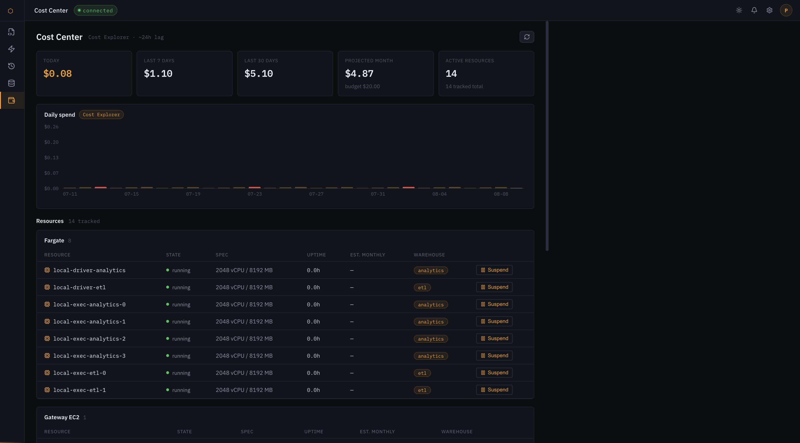

flashpoint / a snowflake alternative on aws
Flashpoint gives you the Snowflake shape on your own AWS account: create a warehouse, run SQL in a worksheet, read the query profile, and pay only while compute runs. It is built on Apache Spark, so your tables and queries stay portable, and the hosted try-it opens in batches.
If you already run Apache Spark on AWS, you have probably chosen between a long-lived EMR cluster and a Databricks workspace. Both are powerful and both are cluster-shaped: you think in clusters, you tune clusters, and idle capacity is a line on a bill you monitor.
Flashpoint starts from the other direction. It is warehouse-shaped. You do not size or babysit a cluster; you pick a T-shirt size, run SQL, and read the profile. When the warehouse is idle it suspends and the meter stops.
| Approach | What you manage | Unit you think in |
|---|---|---|
| EMR cluster | Cluster lifecycle, nodes, scaling, idle cost | Nodes and hours |
| EMR Serverless | Job submissions and worker config | Applications and jobs |
| Flashpoint | Nothing, you create a warehouse and run SQL | Warehouses and queries |
That last row is the whole bet: the managed-Spark decision should be about the query, not the cluster.
Databricks is a platform: notebooks, a workspace, governance, a catalog, and a large surface to learn and pay for. If you want all of that, use it. Flashpoint is a Databricks alternative only in the narrow sense, it gives you managed Spark compute and a SQL warehouse UX without adopting a platform.
Create a warehouse, run SQL, read the profile, pay for compute. No workspace to administer and no notebook product to adopt.
The whole control plane is in a public repository and deploys to your account with OpenTofu. There is nothing to procure and no vendor account to create.
ECS Fargate for compute, S3 for tables and results, DynamoDB for state, Glue for the catalog. All standard services your account already has.
A serverless SQL warehouse normally means someone else's cluster behind a SQL endpoint. Here it is your cluster, launched on demand in your account and suspended when idle, with the warehouse abstraction kept in front of it.
The hosted try-it is invite-only and hard-capped: one short session, one size, one monthly budget. Leave an email and you are in line for a slot.
One email when a slot opens. No spam. Unsubscribe anytime. See the privacy note at the bottom of this page.
The familiar objects have familiar names, so the product reads the way a warehouse user expects.
| Snowflake | Flashpoint |
|---|---|
| Warehouse | Warehouse, an on-demand driver plus spot executors, one size per T-shirt |
| Worksheet | Worksheet, a SQL editor with a results grid |
| Query Profile | Query profile, an operator tree with per-node time, rows and flags |
| Auto-suspend | Idle TTL, a reaper suspends the warehouse and the meter stops |
| Query History | Query history, results as Parquet on S3, expiring after seven days |
| Credits | Compute-seconds, metered directly, shown in the Cost Center |

There are no credits, no contracts and no per-seat pricing. You pay AWS directly for what the warehouse uses, and only while it is running.
Flashpoint copies the shape of the product (warehouses, worksheets, query profiles, per-second billing) and keeps your data in open formats on your own AWS account, so there is nothing to migrate back out of.
Databricks is a full managed platform with notebooks, governance and a large surface. Flashpoint is a small, open control plane for one loop: create a warehouse, run SQL, read the query profile, pay for the compute you used. It is self-hosted on your AWS account and MIT licensed.
Yes. The quickstart runs the whole stack locally with AWS mocked, and the deploy guide brings up the real thing in your own account with OpenTofu. The hosted try-it opens in batches.
Per compute-second, and only while a warehouse is running. Suspending a warehouse drops it to zero. There are no credits, no contracts and no per-seat fees; the Cost Center shows daily spend, live meters and a projection against a monthly budget.
Query results are Parquet on S3, in open formats you can read with any compatible engine, so leaving does not mean exporting from a proprietary store.
One email, one line, no account. Slots are released in batches as the try-it budget allows.
One email when a slot opens. No spam. Unsubscribe anytime.
Privacy. Your email is stored by Buttondown, our newsletter processor, and used only to send try-it invitations. No analytics cookies are set on this page. Ask to be removed at any time and the address is deleted.
Want the technical version? The serverless deep dive covers the architecture, and the quickstart runs on your laptop.